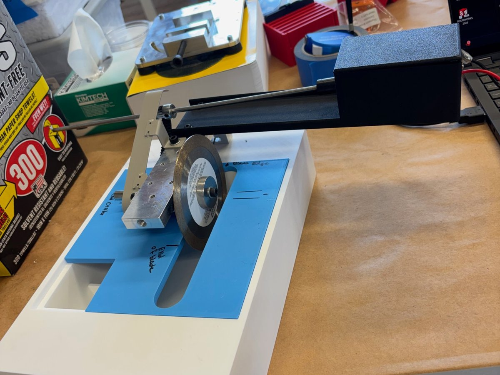
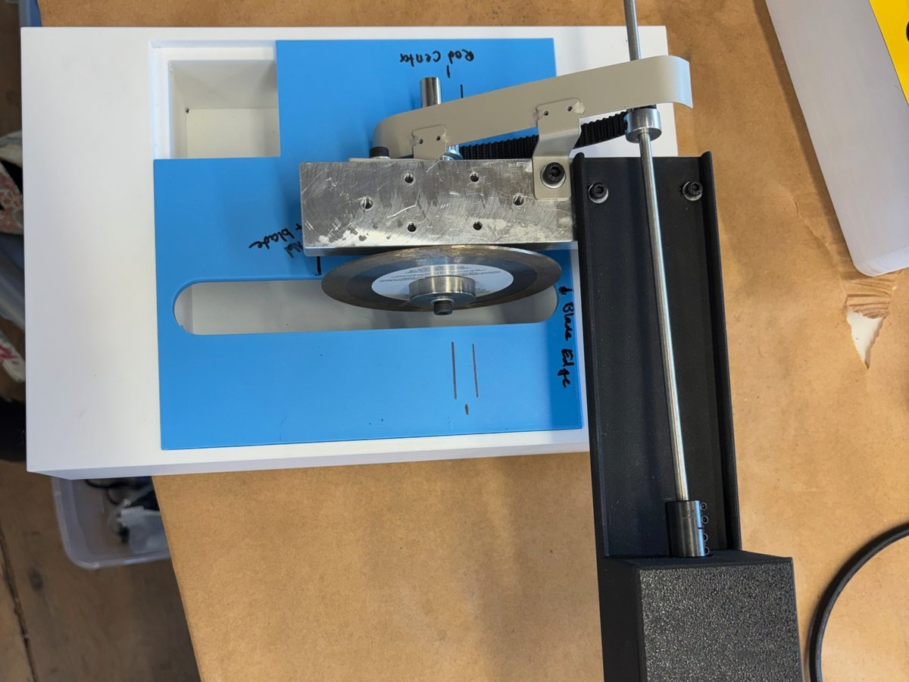
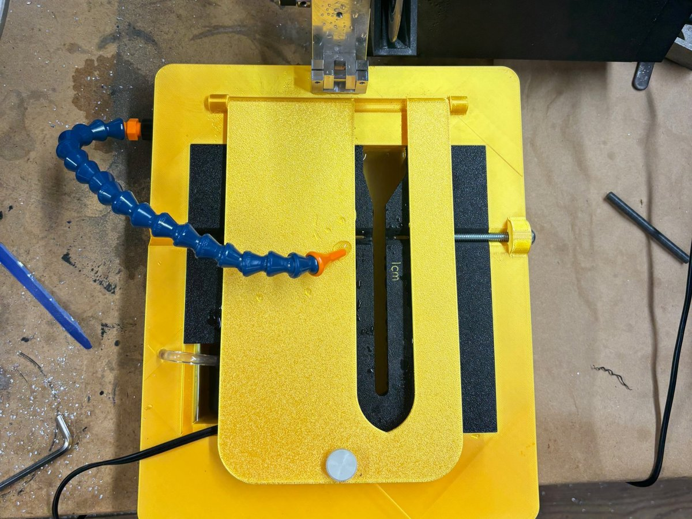

01July 2026
Ceramic wet saw
A compact wet saw that cuts ceramic rods cleanly to an exact, adjustable length.
The problem
Ceramic alumina rods had to be cut to length quickly and cleanly for assembling gate assemblies. Cutting them in our own shop was easier than having them manufactured.
What I didI started with sketches and research into the best ways to cut ceramics, then modeled several designs in CAD and 3D printed each variation to compare.
- Wet cutting. Dry cuts weren't clean enough, so I researched and bought several pumps to test. Water first came through a dental floss tip, which I replaced with a Loc-Line nozzle.
- Reused parts. I took the motor and switch from an older handheld saw and re-soldered the connections to work in the new device.
- Keeping it dry. I built a sealed, waterproof section for the motor and circuitry and tested several guards to cut down splashing.
- Recycled water. A chamber at the bottom holds the pump, and drainage holes under the rod return the water to it.
- Cleaner cuts. A clamp on top reduces the vibration that was making cuts rough.
- Exact lengths. I measured and added an adjustable end stop so every rod comes out the same length.
[Add a result: what it cuts, how precisely, or how the team uses it.]


